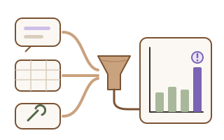

Beschwerde- und Marktdaten aufbereiten (Post-Market Surveillance)
Ich führe Ihre Daten aus der Marktbeobachtung zusammen, mache Trends sichtbar und bereite sie so auf, dass Ihre Bewertung schneller geht.

Erkennen Sie sich wieder?
- Beschwerden kommen per E-Mail, Telefon und Formular und landen an verschiedenen Orten.
- Vor jedem Bericht beginnt die große Suche nach Daten.
- Freitext-Beschwerden lassen sich schwer zählen und vergleichen.
- Trends sehen Sie erst, wenn der Bericht ansteht.
Ein Beispiel
Die Ausgangslage
Ein kleiner Hersteller hat einige Produkte am Markt. Beschwerden kommen als E-Mails, Serviceberichte liegen in Excel, Rückmeldungen aus dem Vertrieb im CRM. Vor dem PMS-Bericht sucht die QM-Verantwortliche alles von Hand zusammen.
Was ich tue
Ich führe die Quellen in einer Tabelle zusammen, vereinheitliche Produktnamen und Zeiträume und zeige Häufigkeiten und Trends grafisch. Freitexte sortiert ein KI-Werkzeug als Vorschlag nach Fehlerart vor. Auf Wunsch kommt ein regelmäßiger Auszug aus öffentlichen Vorkommnis-Datenbanken hinzu.
Das Ergebnis
Die Daten liegen sauber an einem Ort. Die QM-Verantwortliche bewertet und schreibt den Bericht, statt Daten zu sammeln.
Meine Rolle
Ich verbinde Datenaufbereitung in Python mit Grundlagen der MDR, ISO 13485 und ISO 14971. Für die Vorsortierung von Texten nutze ich Claude, die Ergebnisse bleiben Vorschläge.
Das übernehme ich
- Zusammenführen und Bereinigen der Daten
- Trend-Grafiken und Übersichten
- KI-Vorsortierung als Vorschlag, nachvollziehbar dokumentiert
Das bleibt bei Ihnen
- Bewertung von Vorkommnissen und Meldepflichten
- Inhalt und Freigabe von PMS-Bericht bzw. PSUR
- Entscheidung über Korrekturmaßnahmen
So gehe ich vor
- Gespräch: Welche Quellen, welche Produkte, welcher Berichtszeitraum?
- Sie stellen Beispieldaten bereit, gern anonymisiert.
- Ich baue die Zusammenführung, Bereinigung und Auswertung mit Grafiken.
- Optional: Vorsortierung von Freitexten durch KI, mit klarer Kennzeichnung als Vorschlag.
- Übergabe mit Anleitung, damit Sie die Auswertung für jeden Zeitraum selbst wiederholen können.
Stand
Geplante Demo mit öffentlichen Daten aus der US-Datenbank MAUDE (openFDA). Diese Daten sind ungeprüft und erlauben keine Rückschlüsse auf Ursachen; sie dienen nur zur Demonstration.
Klingt das nach Ihrer Situation? Schreiben Sie mir kurz, worum es geht. Für kleine Projekte bin ich ab 2027 verfügbar.
E-Mail schreiben